About Me
I specialize in full-stack development, DevOps, and data analytics. With a robust background in orchestrating complex technical solutions, I excel at helping companies leverage their data to drive informed decision-making and strategic growth. I am passionate about helping organizations harness the power of their data through data analysis, predictive modeling, and visually appealing results. In a world where data is at our fingertips in mass amounts, it’s important to understand the data and I can help any organization to do this.
Resume
Max's Sports Analysis, Chicago IL (2024-Current)
As the Founder and Sole Developer of Max's Sports Analysis, I architected and deployed a complete, production-grade DevOps and software infrastructure. I built a four-node on-premises Kubernetes cluster using containerd and Cilium for CNI, enabling secure service-to-service communication and efficient pod networking. I implemented both logical and physical PostgreSQL replication, integrated Debezium and Apache Kafka for real-time event streaming, and applied Single Message Transformations (SMT) to clean and reshape sports data during ingestion. Leveraging AWS Step Functions, Lambda, and IAM roles, I automated secure data collection from both DraftKings WebSocket feeds and official sports APIs. My system includes custom gRPC microservices for high-performance communication, with gRPC-JSON transcoding for ease of use by web clients. I also use Apache Flink for stateful stream processing and event time windowing to support complex analytics on sports odds and event timing. I deployed microservices using Golang for backend logic and Node.js with GraphQL for the frontend API layer. Networking is secured using TLS certificates via Cert-Manager, with traffic routed through an Nginx Ingress Controller and MetalLB for bare-metal load balancing. I also authored Kubernetes CRDs and Operators that dynamically spin up pods in response to upcoming sporting events. Currently, I'm developing a React frontend with JWT-secured WebSocket connections to provide real-time odds and insights to users.
The Premiere Group, Columbia MO (2023)
During my internship, I played a central role in integrating real-time business data with modern data stack tools including AWS, Snowflake, Fivetran, and Looker. I built an automation script to extract data from Turo, the car rental platform, by launching a headless browser, automating 2FA login, and capturing Bearer tokens to call authenticated APIs. I also maintained and analyzed a fleet of Teslas using the Tessie API, mapping vehicle locations and retrieving vehicle-specific telemetry. I performed transformation and modeling tasks using DBT (Data Build Tool), preparing the data for visualization and insights generation by business stakeholders.
Undergraduate Research, Columbia MO (2019-2022)
As a research assistant at the University of Missouri, I contributed to a U.S. Navy-funded project focused on identifying underwater targets using sonar image data. My responsibilities included annotating SAS (Synthetic Aperture Sonar) images in MATLAB, applying and testing different image segmentation algorithms, and tuning neural network architectures for classification performance. I actively reviewed academic literature on segmentation techniques to improve algorithmic accuracy and wrote MATLAB scripts for training, evaluation, and visualization of experimental results.
Dairy Management Inc, Rosemont IL (2020)
As a summer intern, I developed a custom social media scraper to collect, store, and analyze data from Twitter. The tool helped stakeholders make informed partnership and sponsorship decisions based on sentiment and engagement metrics. I provided insight into how COVID-19 affected consumer behavior, particularly in food and wellness habits, using both statistical summaries and qualitative feedback. I also read and summarized cutting-edge NLP research to help the executive team understand how natural language technology could be applied to improve health and food industry analysis.
Data Analysis, Remote (2019-2020)
I independently developed a tool to clean, parse, and normalize a corpus of over 100,000 legal cases, making the data suitable for supervised and unsupervised learning tasks. My work involved experimenting with various distance metrics to compute document similarity and clustering. I researched and benchmarked different NLP models and algorithms for potential integration, including TF-IDF, word embeddings, and transformer-based methods, aiming to improve legal text classification and retrieval tasks.
Projects
-
Spot
I developed a Unity-based simulation program to test robotic control code on Spot, the quadruped robot developed by Boston Dynamics. By implementing the kinematics of Spot within the Unity physics engine, I was able to simulate realistic movements and behaviors of the robot in a virtual environment. This allowed for safe and rapid testing of control algorithms without requiring access to the physical robot.
Personal Interests
-
Sports
-
Programming
-

Gaming
Contact Me
Phone: +00 151515
Email: cilekm@dupage.edu